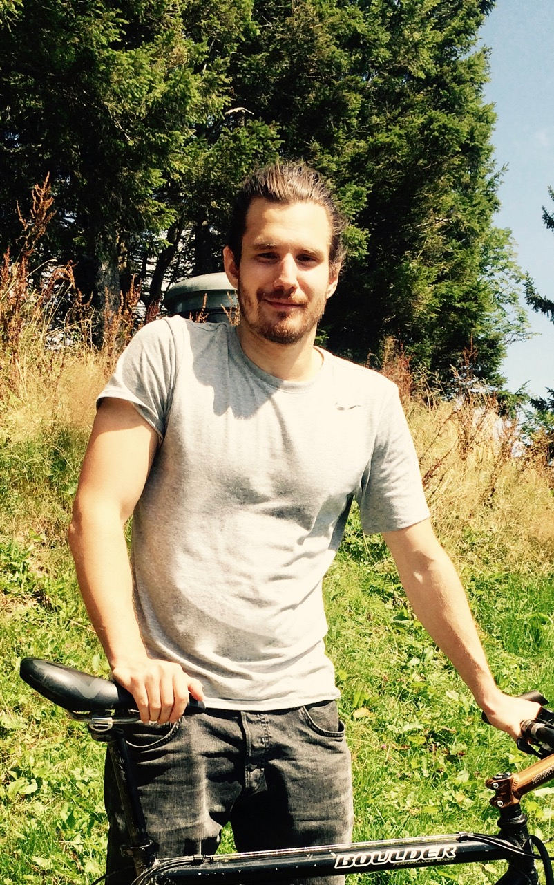
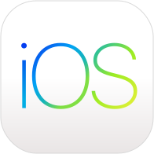

Über mich
Gerne schicke ich Ihnen ein ausführliches Curriculum Vitae .
- Name
- Ron Burch
- Erfahrung
- 15 Jahre Erfahrung in der Softwareentwicklung für Webagenturen und industrielle Grossunternehmen. Breites Grundwissen mit Vertiefung in Web- und Mobilapplikationen. Planung, Management, Testing und Umsetzung komplexer Softwarelösungen. Realisation diverser Projekte für Kunden in verschiedensten Branchen. Automatisierung firmeninterner Prozesse. Implementation, Design und Planung eigener App für Android und iOS.
- Studium
Hochschule Luzern — Technik & Architektur
Bachelor of Science in Software Engineering (mit Vertiefung in Software Systems)
- Selbststudium
Design und Usability Grundlagen
Finanzmärkte und wirtschaftliche Grundlagen
Cryptocurrencies Technologie und Trading
Machine Learning Grundlagen und Implementation eigener neuronaler Netzwerke
Projektumsetzung mit prototypenbasierter Entwicklung
Generatives End-to-End Testing von Applikationen und Services
- Geboren
- 1988 in Zug
- Sprachen
Deutsch (Muttersprache)
Englisch (Hauptsprache, zwölf Jahre tägliche praktische Anwendung)
Projekte
Da Ron in verschiedensten Projekten gearbeitet hat, wird hier nur auf wichtigsten eingegangen. Als allround Webentwickler und Projektmanager hat Ron die folgenden Projekte umgesetzt, geplant und gemanaged.
Das interne Pro Senectute Reporting Tool ermöglicht die Erfassung verschiedenster Werte in hierarchischer Form. Daten der bestehenden Lösung wurden vollständig migriert. Ron hat die Planung und Umsetzung des Projektes in einem dreiköpfigen Team übernommen und in Zusammenarbeit mit dem Kunden die initialen Requirements festgelegt.
Für Coople (damals Staff-Finder) hat Ron die Weiterentwicklung, Maintenance und Planung der Webapplikation übernommen und war in ständigem Kundenkontakt und Projektmanagement involviert. Coople ermöglicht es Firmen Temporärjobs auszuschreiben und gezielt Arbeitssuchende Fachkräfte in der Umgebung zu finden.
In den letzten zwei Jahren hat Ron seinen Entwicklungsprozess perfektioniert und neue Technologien für die Entwicklung von mobilen Applikationen erlernt. Das Ergebnis dieses Prozesses ist eine App für iOS und Android, die mehrdimansionale Daten visualisiert und filtert. Diese App ist auf dem Google Play Store und iOS App Store verfügbar und stellt ein Proof of Concept der neu erlernten Fähigkeiten dar. Dadurch ist eine sehr effektive und benutzerfreundliche Arbeitsweise, welche native Apps zu tiefen Kosten (vergleichbar mit Webapplikationen) gewährleistet.
Technologie
Ron hat sich zwei Jahre Zeit genommen um die idealen Technologien für die mobile Applikationsentwicklung zu finden und diese zu erlernen. Dabei wurde auf folgende Anforderungen Rücksicht genommen: Effiziente Entwicklung, Integration in bestehende Softwarelösungen, die Möglichkeit auf bestehendes Fachwissen im Webbereich zurückzugreifen und ein nativer Look & Feel, ohne auf Platformunabhängigkeit zu verzichten.
Auf dem Smartphone wird die Applikation in ClojureScript auf Basis von React Native umgesetzt. Serverseitig wird ein bestehendes System erweitert oder ein neuer auf der Java Virtual Machine basierender Service entwickelt.




Effiziente Entwicklung
Der moderne Softwareentwicklungsprozess ist leider häufig ineffizient und bürokratisch. Dies hemmt die Flexibilität und bewirkt eine massive Kostenerhöhung. Mit dem Einsatz von ClojureScript wird die Komplexität und Bürokratie so weit wie möglich begrenzt. Diese Programmiersprache ermöglicht einen interaktiven Entwicklungsprozess, bei dem Fehlentscheide früh erkannt werden.
Integration in bestehende Softwarelösungen
React Native erlaubt es bestehende Mobile Applikationen zu erweitern. Eine komplette Neuentwicklung ist somit nicht notwendig.
Bestehende serverseitige Lösungen können integriert oder erweitert werden. Clojure kann direkt auf bestehende Java Bibliotheken oder Applikationen zugreifen.
Bestehendes Fachwissen in der Webentwicklung
Da React Native auf Webtechnologien basiert, ist der verfügbare Pool von Fachkräften sehr gross. Erfahrung in der Webentwicklung reicht um produktiv Applikationen zu entwickeln.
Designs können direkt von CSS Vorlagen übernommen werden, ohne die nativen Layout Engines separat zu erlernen.
Nativer Look & Feel trotz Platformunabhängigkeit
Eine qualitativ hochwertige Applikationen unterscheidet sich, hauptsächlich durch eine native Benutzerfreundlichkeit, von billiger Massenware. React Native erlaubt es die App tief in das iOS oder Android System zu integrieren. Animationen und Benutzerinteraktionen sind identisch zu nativ entwickelten Apps.
Methodik
Einer der grossen Problembereiche in der Softwareentwicklung ist eine unklare Kommunikationsweise. Kunde und Entwickler haben unterschiedliche Vorstellungen von Requirements und reden aneinander vorbei. Damit eine zeitnahe sowie nachhaltende Softwareentwicklung gewährleistet werden kann, ist es wichtig, dass der Entwicklungsstand und die Funktionsweise jederzeit für den Kunden ersichtlich ist.
Um dieses Ziel zu erreichen, hat sich über die Jahren die iterative Entwicklung bewährt. Nach einer kurzen Planungsphase am Anfang des Projektes wird das Produkt schrittweise umgesetzt. Nach jedem dieser Schritte (auch Iterationen genannt) kann der Kunde den Fortschritt überprüfen und auf die weitere Entwicklung Einfluss nehmen. Die Schrittdauer kann von einem Tag bis zu einer Woche flexibel auf das jeweilige Projekt angepasst werden.
Dies ermöglicht eine frühe Problemerkennung und flexible Adaption auf sich ändernde Anforderungen. Traditionell geführte Projekte reagieren wesentlich fragiler auf diese Begebenheiten. Des Weiteren werden Projektfortschritt und Kostenentwicklung wesentlich transparenter.